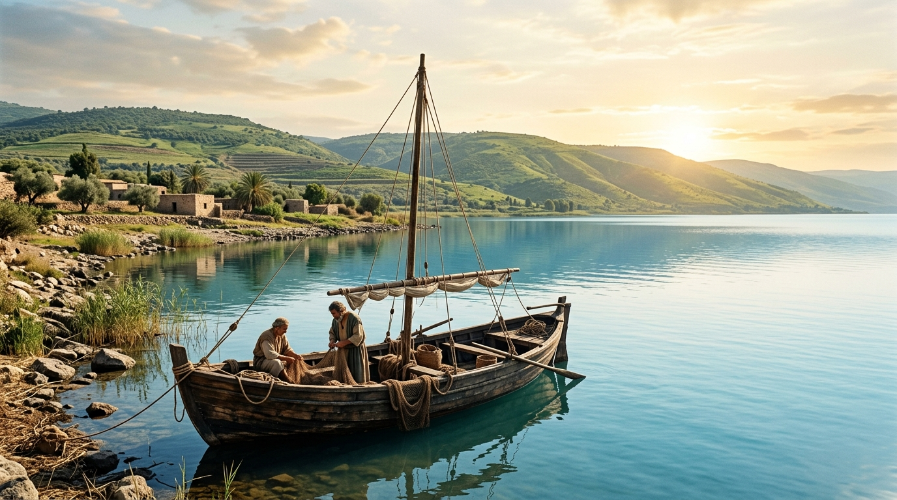
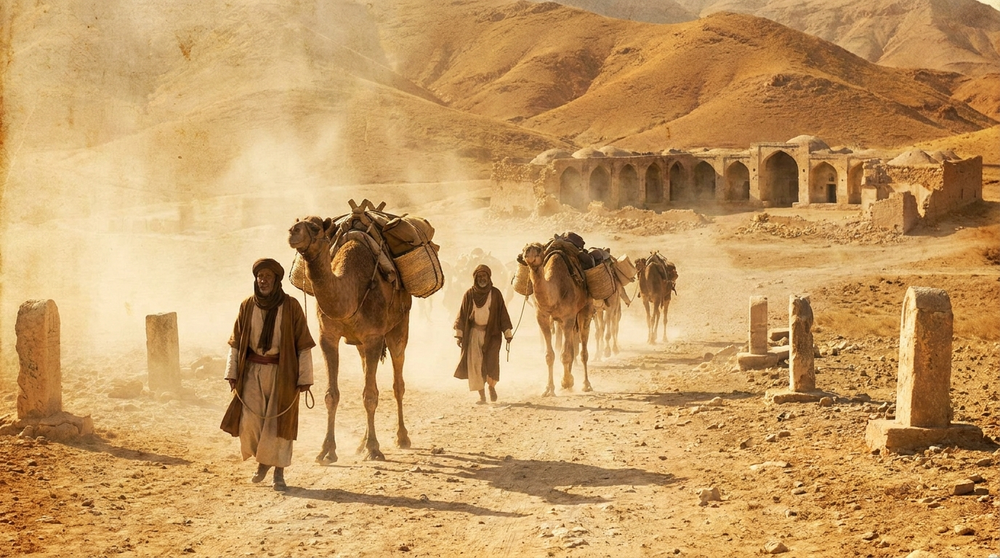

O Quinto Evangelho
A Terra onde os eventos bíblicos ocorreram é frequentemente chamada por estudiosos de "o Quinto Evangelho". Conhecer o clima, o relevo, as distâncias e a localização das cidades dá vida às histórias e nos ajuda a entender as dificuldades e os milagres vividos pelo povo de Deus.
Neste estudo:
⛰️ Relevo e Clima

A Terra Prometida possui uma diversidade geográfica impressionante em um território pequeno: planície costeira, montanhas centrais, o Vale do Jordão e a região do Neguebe. O clima varia entre estações chuvosas e secas, afetando diretamente a agricultura e o pastoreio.
🌊 Corpos D'água Importantes

O Mar Mediterrâneo (o "Grande Mar"), o Rio Jordão (que corta o vale), o Mar da Galileia (lago de água doce) e o Mar Morto (o ponto mais baixo da terra, extremamente salino) são elementos cruciais na narrativa bíblica, cenários de batismos, viagens de pesca e travessias.
🛤️ Rotas e Caminhos Antigos

A localização de Israel conectava três continentes (Ásia, África e Europa). A principal via comercial, a Via Maris, cruzava a região, ligando o Egito à Mesopotâmia. O controle dessas rotas era motivo de disputas políticas e guerras ao longo da história.
🏛️ Cidades Estratégicas

Cidades fortificadas como Jerusalém (no topo das montanhas), Hazor, Megido (localizada em um ponto estratégico militar) e Jericó (no vale) serviam como centros administrativos, militares e religiosos. Entender sua posição ajuda a compreender cercos e batalhas.
🏜️ O Deserto

O deserto (Barba) ocupa grande parte do território a leste e ao sul. Ele servia como lugar de refúgio (como para Davi fugindo de Saul), testes e provações (os 40 anos de Israel, o retiro de Jesus), e local de revelação divina.
✅ Resumo
A geografia não é apenas um pano de fundo; ela é um personagem ativo na Bíblia. Conhecer o cenário físico nos ajuda a visualizar a jornada dos personagens, entender o contexto político e apreciar a beleza e os desafios da Terra Santa.
🎥 Aprofunde seu estudo
Deseja visualizar os mapas e cenários bíblicos?
Assista a aulas e documentários sobre a geografia da Bíblia.